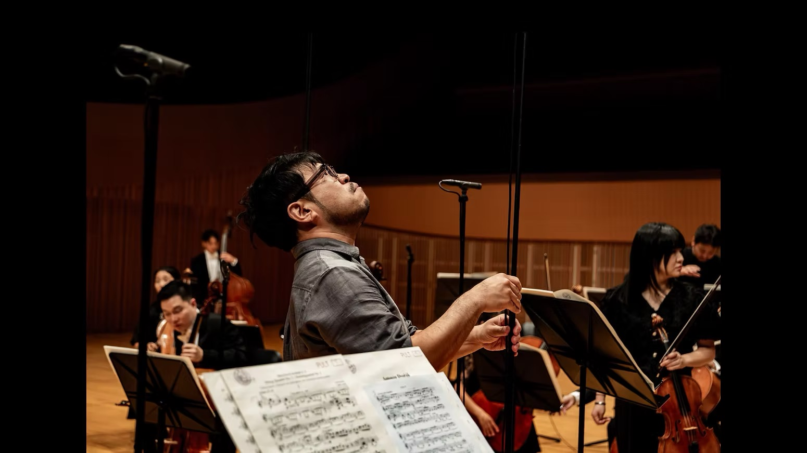

Berlin · Seoul
Hari Yim
Recording Producer · Balance Engineer
Recording classical music, everywhere.
Recording production from session planning to final master — across Europe and Asia.

Recording session · Europe / Asia
45Recording cities
14Countries
4Continents
2011Based in Germany since
A recording should feel like an extension of the performance — not a layer placed on top of it.
I work with soloists, ensembles and orchestras from pre-production and session strategy through editing, mixing and final master, with musical communication at the center of every decision.
More about HariSelected work
A small selection — full credits remain available
Selected labels & production partners
La Dolce VoltaNaxos DeutschlandNavona RecordsLive NotesOehms ClassicsGenuinARS ProduktionHankyung ARTE TVFoMK
45 cities · 14 countries · 4 continents
Recording locations
45 cities across 14 countries.
Map data is provided by an external tile provider.
Planning a recording?
For album, broadcast, live and chamber music productions in Europe or Asia.